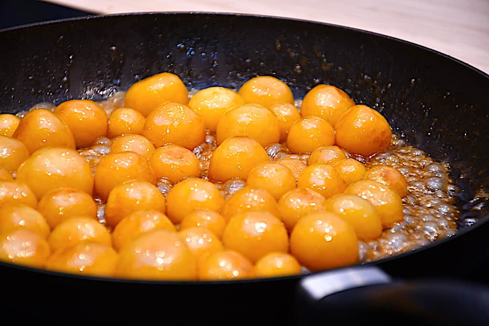

Brunede Kartofler

Brunede kartofler er fast tilbehør og en dansk delikatesse i det 'brune køkken'
Brunede kartofler er en klassiker lavet med med pillekartofler. En modern day variant er at købe kartofler på glas i en god kvalitet og så brune dem
Du skal bruge
- 2 glas kartofler a ca 450 gr.
- 100 gr smør
- 150 gr sukker
Fremgangsmåde
- Smelt sukker ved middel tempratur på en tykbundet pande, til det er flydende, klart og har en lysebrun farve. Pas på ikke at varme det for meget, så sukkeret branker
- smelt smørret på panden i det fuldstændigt smeltede sukker. Hvis panden og sukker ikke har den tilstrækkelige temperatur, vil det kolde smør få sukkeret til at krystallisere og klumpe. Smørret kan med fordel deles i mindre stykker og spredes jævnt ud over sukkeret
- Når smørret er bruset af, så vandet er fordampet, hældes de drænede og aftørrede (i fx et viskestykke) kartofler på panden
- Lad dem få lidt varme og rest vand fra kartoflerne fordamper. Arbejd med karamelmssen over kartoflerne til efter 10-15 minutter hvor karamelmassen begynder at hænge fast på kartoflerne
- Når kartoflerne er ved at være færdige, skrues der ned for panden. Hold kartoflerne varme på denne, indtil de skal serveres
Der er nogen som bruger sirup til processen, det skulle være nemmere. Jeg har ikke erfaringer med den fremgangsmåde. Men følges denne opskrift lykkes de brunede kartofler hver gang